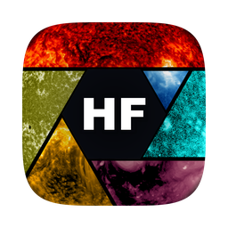

HelioFITS
Solar FITS files, rendered as the Sun: in the right instrument colormap, with real coordinates, right where your data already lives.
Source on GitHub HelioFITS Studio
- Thumbnails on every
.fitsicon - Press Space for an interactive preview: pixel values, coordinates, region stats
- Telescope, instrument and wavelength searchable in Spotlight
- A viewer with the full header and a ready-to-run sunpy snippet
Free and open source · no account · no network access
HelioFITS previews solar FITS files in Finder and Quick Look. HelioFITS Studio is the full desktop application for working with coronagraph and wide-field solar imagery.